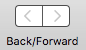

|
Back and Forward |
|
As you work with a dictionary window, the window remembers everything displayed in the info pane. It’s as if each display in the info pane were a web page. As in a web browser, you can go back to previously viewed “pages”, and then forward again. To do so:
-
Choose Dictionary > Go Back or Dictionary > Go Forward (or use the convenient keyboard shortcuts).
-
Or, use the Back/Forward buttons in the dictionary window’s toolbar.
